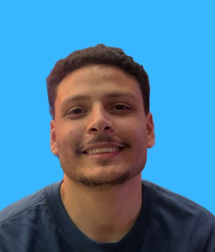

Olá! Me chamo Gustavo e sou Desenvolvedor Front-End
Desenvolvedor FrontEnd com experiência intermediária nas tecnologias JavaScript, TypeScript, Node e React. Sou estudante de Análise e Desenvolvimento de Sistemas pela Universidade Nove de Julho. Além disso, sou apaixonado por criar soluções tecnológicas que resolvem problemas reais e que agregam valor aos usuários.
Saiba Mais!
